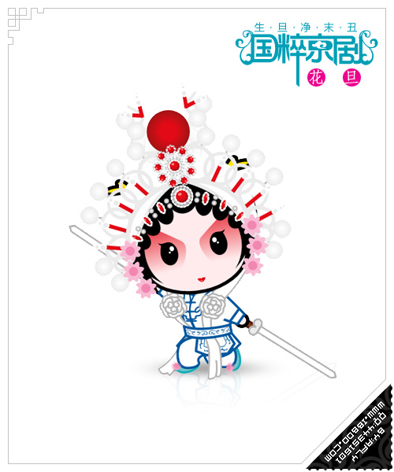

- 


使被转换的子元素保留其3D转换的效果（需要设置在父元素中 使被转换的子元素保留其3D转换的效果（需要设置在父元素中 使被转换的子元素保留其3D转换的效果（需要设置在父元素中 使被转换的子元素保留其3D转换的效果（需要设置在父元素中 使被转换的子元素保留其3D转换的效果（需要设置在父元素中 使被转换的子元素保留其3D转换的效果（需要设置在父元素中 使被转换的子元素保留其3D转换的效果（需要设置在父元素中 使被转换的子元素保留其3D转换的效果（需要设置在父元素中 使被转换的子元素保留其3D转换的效果（需要设置在父元素中 使被转换的子元素保留其3D转换的效果（需要设置在父元素中 使被转换的子元素保留其3D转换的效果（需要设置在父元素中 使被转换的子元素保留其3D转换的效果（需要设置在父元素中 使被转换的子元素保留其3D转换的效果（需要设置在父元素中 使被转换的子元素保留其3D转换的效果（需要设置在父元素中 使被转换的子元素保留其3D转换的效果（需要设置在父元素中 使被转换的子元素保留其3D转换的效果（需要设置在父元素中使被转换的子元素保留其3D转换的效果（需要设置在父元素中 使被转换的子元素保留其3D转换的效果（需要设置在父元素中 使被转换的子元素保留其3D转换的效果（需要设置在父元素中 使被转换的子元素保留其3D转换的效果（需要设置在父元素中 使被转换的子元素保留其3D转换的效果（需要设置在父元素中 使被转换的子元素保留其3D转换的效果（需要设置在父元素中 使被转换的子元素保留其3D转换的效果（需要设置在父元素中 使被转换的子元素保留其3D转换的效果（需要设置在父元素中v使被转换的子元素保留其3D转换的效果（需要设置在父元素中